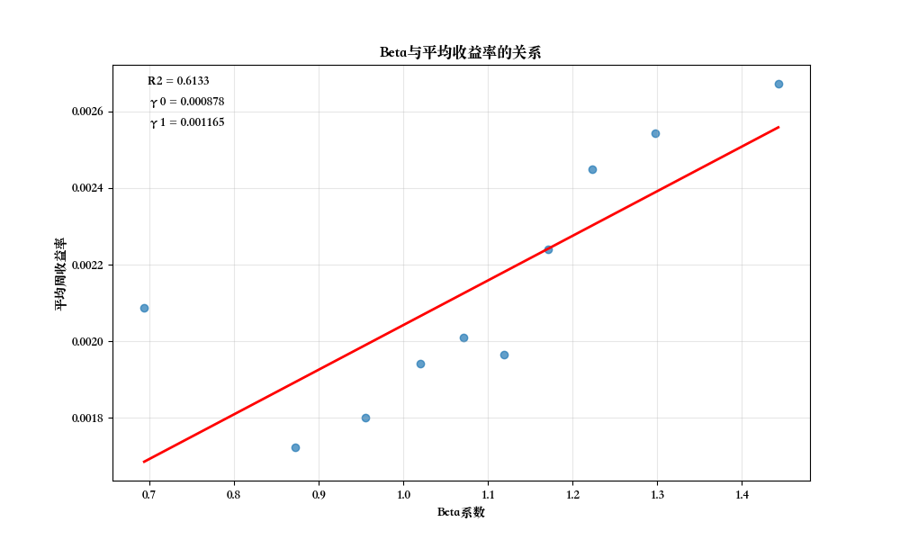

4 Capital Asset Pricing Model (CAPM) Empirical Test
4.1 Lab Objectives
- Master the cross-sectional regression method for CAPM testing: Learn to use the cross-sectional regression method for CAPM validation.
- Use Python for CAPM empirical testing: Become familiar with using Python for data acquisition, regression analysis, and results analysis.
- Test the applicability of the CAPM model in the Chinese stock market: Empirically test whether the CAPM model holds in the Chinese stock market using Chinese stock market data.
- Understand the limitations of the CAPM model: Deepen understanding of the CAPM model’s limitations through empirical results.
4.2 Lab Principles
4.2.1 CAPM Model Review
The Capital Asset Pricing Model (CAPM) describes the relationship between the expected return of a risky asset and its systematic risk. Its core formula is the Security Market Line (SML):
\(E(R_i) = R_f + \beta_i[E(R_m) - R_f]\)
Where:
- \(E(R_i)\): Expected return of asset \(i\)
- \(R_f\): Risk-free rate
- \(\beta_i\): Beta coefficient of asset \(i\), measuring systematic risk
- \(E(R_m)\): Expected return of the market portfolio
- \([E(R_m) - R_f]\): Market risk premium
4.2.2 Empirical Testing Methods for CAPM Model
This lab will use the Portfolio Grouping method to empirically test the CAPM model.
Portfolio Grouping Method
To address the issue of large estimation errors in individual stock Betas, we use the portfolio grouping method for CAPM testing. This method was first proposed by Black, Jensen, and Scholes (1972) and can significantly reduce the impact of Beta estimation errors on test results.
The empirical model is as follows:
\(\overline{R}_{p} = \gamma_{0} + \gamma_{1} \overline{\beta}_p + \eta_{p}\)
- \(\gamma_{0}\) represents the expected return of the zero-Beta portfolio. If CAPM holds, \(\gamma_{0}\) should be close to the risk-free rate \(R_f\).
- \(\gamma_{1}\) represents the risk premium. If CAPM holds, \(\gamma_{1}\) should be equal to the market risk premium \(E(R_m) - R_f\) and be significantly positive.
- \(\overline{R}_{p}\) and \(\overline{\beta}_p\) are the average return and average Beta of the portfolio, respectively.
Steps:
- Step 1: Time-series regression to estimate individual stock Beta values: Use a time-series regression model to estimate the Beta value \(\beta_i\) for each stock \(i\).
- Step 2: Group stocks by Beta size: Divide stocks into multiple portfolios based on their Beta values (this lab uses 10 groups).
- Step 3: Calculate portfolio characteristics: Calculate the average Beta and average return for each portfolio.
- Step 4: Portfolio-level regression: Perform a cross-sectional regression using the average Beta and average return of the portfolios.
Compared to directly using individual stock data for cross-sectional regression, the portfolio grouping method has the following advantages: - Reduces the impact of Beta estimation errors, improving the robustness of test results. - Diversifies unsystematic risk, better capturing the relationship between Beta and average returns. - Reduces the influence of outliers on regression results. - Is more consistent with the practice of investors holding diversified portfolios.
4.3 Lab Data
This lab uses data from the Chinese A-share market for testing.
- Stock Data: Shanghai A-shares are selected as the research subjects.
- Market Index: The Shanghai Composite Index is used as a proxy for the market portfolio.
- Risk-Free Rate: Chinese government bond rates are used as a proxy for the risk-free rate.
- Data Period: Historical data from 2015 to 2024 is selected.
- Data Frequency: Weekly data is used.
Data Source: CSMAR (accessible via university IP)
4.4 Lab Steps
4.4.1 Import Necessary Python Libraries
import pandas as pd
import numpy as np
import statsmodels.api as sm
import os
from glob import glob
import matplotlib.pyplot as plt
###################################
# Step 1: Read market index data
# The market index represents the overall market performance and is the market portfolio in the CAPM model.
###################################
index_files = "./data/mktret_weekly/TRD_Weekm.xlsx"
market_data = pd.read_excel(index_files, header=0, skiprows=3, names=['Markettype', 'Trdwnt', 'Wretwdos', 'Dnstkcal'])
# Select the float-adjusted market capitalization-weighted average return (Wretwdos) for the Shanghai A-share market (Markettype=1).
# The float-adjusted market capitalization-weighted average return better represents true market performance as it considers the market size of different stocks.
market_data = market_data[market_data['Markettype'] == 1]
# Convert Trdwnt (YYYY-WW) into two variables: year and week.
market_data['year'] = market_data['Trdwnt'].str[:4]
market_data['week'] = market_data['Trdwnt'].str[5:]
# Filter data for the years 2015 to 2024.
# Selecting data from the last 10 years ensures sufficient sample size and reflects current market characteristics.
market_data = market_data[market_data['year'] >= '2015']
market_data = market_data[market_data['year'] <= '2024']
###################################
# Step 2: Read risk-free rate data
# The risk-free rate is an important component of the CAPM model, representing the minimum return investors require without taking any risk.
###################################
rf_files = "./data/rf_weekly/TRD_Nrrate.xlsx"
rf_data = pd.read_excel(rf_files, header=0, skiprows=2, names=['Nrr1', 'Clsdt', 'Nrrdaydt'])
# Convert rf from percentage units to decimals.
# Standardizing units facilitates subsequent calculation of excess returns.
rf_data['Nrrdaydt'] = rf_data['Nrrdaydt'] / 100
# Convert Clsdt to datetime format.
rf_data['Clsdt'] = pd.to_datetime(rf_data['Clsdt'])
# Convert Clsdt to trading week format (week number starts from 1).
# This step is to convert daily data to weekly data, consistent with stock and market data.
rf_data['Trdwnt'] = rf_data['Clsdt'].dt.strftime('%Y-%U').apply(
lambda x: f"{x.split('-')[0]}-{int(x.split('-')[1]) + 1:02d}"
)
# Convert Trdwnt into two variables: year and week.
rf_data['year'] = rf_data['Trdwnt'].str[:4]
rf_data['week'] = rf_data['Trdwnt'].str[5:]
# Calculate the average of rf for each year and week.
# Since there might be multiple risk-free rate data points within a week, take the average as the representative value for that week.
rf_data = rf_data.groupby(['year', 'week']).agg({'Nrrdaydt': 'mean'}).reset_index()
# Filter data for the years 2015 to 2024.
rf_data = rf_data[rf_data['year'] >= '2015']
rf_data = rf_data[rf_data['year'] <= '2024']
###################################
# Step 3: Read all stock return data (2015-2024)
# Individual stock returns are the core data for CAPM testing, used for estimating Beta and validating model predictions.
###################################
# Read all excel files in stockret_weekly
stockret_folders = "./data/stockret_weekly"
stock_files = glob(os.path.join(stockret_folders, "*.xlsx"))
print(f"Found stock data files: {stock_files}")
# Create an empty list to store all stock data
stock_data_list = []
# Loop through and read files
for file in stock_files:
temp_data = pd.read_excel(file, header=0, skiprows=3, names=['Stkcd', 'Trdwnt', 'Wretwd', 'Markettype'])
stock_data_list.append(temp_data)
# Concatenate all stock data
stock_data = pd.concat(stock_data_list, ignore_index=True)
# Select only Shanghai A-share market (Markettype=1)
# Maintain consistency with the market index to ensure sample uniformity.
stock_data = stock_data[stock_data['Markettype'] == 1]
# Convert Trdwnt into two variables: year and week.
stock_data['year'] = stock_data['Trdwnt'].str[:4]
stock_data['week'] = stock_data['Trdwnt'].str[5:]
# Filter data for the years 2015 to 2024.
stock_data = stock_data[stock_data['year'] >= '2015']
stock_data = stock_data[stock_data['year'] <= '2024']
# Check the number of unique values for Stkcd.
# Understanding how many stocks are included in the sample; a larger sample size makes the results more representative.
print(f"Number of unique Stkcd values: {stock_data['Stkcd'].nunique()}")
###################################
# Step 4: Merge DataFrames
# Merge stock, market, and risk-free rate data to prepare for subsequent analysis.
###################################
# Merge stock_data with market_data on ['year', 'week']
merged_data = pd.merge(stock_data, market_data, on=['year', 'week'], how='left')
# Merge merged_data with rf_data on ['year', 'week']
merged_data = pd.merge(merged_data, rf_data, on=['year', 'week'], how='left')
# Create a new column 'market_excess_return', calculate market excess return.
# Market excess return = Market return - Risk-free rate, representing the additional return gained from taking market risk.
merged_data['market_excess_return'] = merged_data['Wretwdos'] - merged_data['Nrrdaydt']
# Calculate market risk premium.
# Market risk premium is an important parameter in the CAPM model, representing compensation for bearing systematic risk.
market_risk_premium = merged_data['market_excess_return'].mean()
print(f"Market risk premium: {market_risk_premium}")
###################################
# Step 5: Time-series regression to estimate Beta
# Beta is the core parameter of the CAPM model, measuring the sensitivity of individual stocks to market risk.
###################################
# First, perform a regression on one stock to test the results.
# Filter data for Stkcd == 600169
merged_data0 = merged_data[merged_data['Stkcd'] == 600169]
# Perform regression (with missing value handling)
# First, delete rows containing missing values.
merged_data0 = merged_data0.dropna(subset=['market_excess_return', 'Wretwd'])
# Perform time-series regression: R_i = α_i + β_i(R_m - R_f) + ε_i
# Here, we directly use total return instead of excess return as the dependent variable; this is a modified CAPM testing method.
model = sm.OLS(merged_data0['Wretwd'], sm.add_constant(merged_data0['market_excess_return'])).fit()
# Display regression results
# The constant term represents Alpha, the slope represents Beta.
print(model.summary())
###################################
# Group merged_data by stkcd, perform regression, y is Wretwd, x is market_excess_return
# Store regression results in the time_series_results dictionary.
time_series_results = {}
for stock_code in merged_data['Stkcd'].unique():
individual_data = merged_data[merged_data['Stkcd'] == stock_code]
# First, delete rows containing missing values.
individual_data = individual_data.dropna(subset=['market_excess_return', 'Wretwd'])
# Filter for more than 30 rows, otherwise skip.
# Too small a sample size will lead to unreliable regression results.
if len(individual_data) > 30:
model = sm.OLS(individual_data['Wretwd'], sm.add_constant(individual_data['market_excess_return'])).fit()
time_series_results[stock_code] = model
else:
print(f"Stock {stock_code} has fewer than 30 rows, skipping.")
# Extract beta values from regression results.
# Beta value represents the sensitivity of individual stocks to market risk. Beta > 1 indicates the stock is more volatile than the market.
beta_values = [result.params[1] for result in time_series_results.values()]
# beta_values need to be merged with corresponding stock codes.
beta_values = pd.DataFrame({'Stkcd': list(time_series_results.keys()), 'beta': beta_values})
###################################
# Step 6: Use the portfolio grouping method to test the CAPM model
# The portfolio grouping method involves grouping stocks by Beta, calculating portfolio average Beta and return,
# then performing regression. This significantly reduces the impact of Beta estimation errors and improves the robustness of test results.
###################################
# Group beta_values into 10 equal groups from smallest to largest, create a 'group' column.
# Grouping can reduce the impact of idiosyncratic risk and better test the relationship between systematic risk and return.
beta_values['group'] = pd.qcut(beta_values['beta'], q=10, labels=False, duplicates='drop')
# Merge stock data based on stock code.
capm_data = pd.merge(stock_data, beta_values, on='Stkcd', how='left')
# Group capm_data by 'group', calculate average stock return and average beta for each group, store in a DataFrame.
# Portfolios can diversify unsystematic risk and better reflect the relationship between Beta and return.
group_data = capm_data.groupby('group').agg({'Wretwd': 'mean', 'beta': 'mean'})
# Regress Wretwd on beta, calculate intercept and slope.
# Cross-sectional regression model: R_i = γ_0 + γ_1 * β_i + η_i
# γ_0 should be close to the risk-free rate, γ_1 should be close to the market risk premium.
model = sm.OLS(group_data['Wretwd'], sm.add_constant(group_data['beta'])).fit()
# Display regression results
print(model.summary())
# Extract and interpret results
gamma_0 = model.params['const'] # Zero-Beta portfolio return
gamma_1 = model.params['beta'] # Estimated market risk premium
p_value_gamma_0 = model.pvalues['const'] # Significance of zero-Beta portfolio return
p_value_gamma_1 = model.pvalues['beta'] # Significance of market risk premium
print(f"\nCAPM Cross-Sectional Regression Results Interpretation:")
print(f"γ0 (Zero-Beta portfolio return) = {gamma_0:.6f}, p-value = {p_value_gamma_0:.6f}")
print(f"γ1 (Market risk premium) = {gamma_1:.6f}, p-value = {p_value_gamma_1:.6f}")
print(f"Actual market risk premium = {market_risk_premium:.6f}")
# CAPM test conclusion
print("\nCAPM Test Conclusion:")
if p_value_gamma_0 < 0.05:
print(f"- γ0 ({gamma_0:.6f}) is significant, indicating the existence of a zero-Beta portfolio return.")
else:
print(f"- γ0 ({gamma_0:.6f}) is not significant, cannot determine the zero-Beta portfolio return.")
if p_value_gamma_1 < 0.05:
if gamma_1 > 0:
print(f"- γ1 ({gamma_1:.6f}) is significantly positive, indicating that Beta risk is priced by the market.")
if abs(gamma_1 - market_risk_premium) < 0.01: # A threshold for "close"
print(f" And it is close to the actual market risk premium ({market_risk_premium:.6f}), supporting the CAPM model.")
else:
print(f" However, there is a difference from the actual market risk premium ({market_risk_premium:.6f}), CAPM model is partially supported.")
else:
print(f"- γ1 ({gamma_1:.6f}) is significant but negative, which contradicts CAPM expectations, indicating Beta risk is not correctly priced.")
else:
print(f"- γ1 ({gamma_1:.6f}) is not significant, indicating that Beta risk is not priced by the market, CAPM model is not supported in this sample.")
###################################
# Step 7: Plotting
# Plot the average Beta and return of portfolios on a graph, along with the regression line.
###################################
# Set plotting style
plt.style.use('ggplot')
# Set different fonts based on the operating system
import platform
# Get operating system type
system = platform.system()
# Set matplotlib font
if system == 'Windows':
plt.rcParams['font.sans-serif'] = ['SimHei'] # Windows uses SimHei
elif system == 'Darwin':
plt.rcParams['font.sans-serif'] = ['Songti SC'] # Mac uses Songti SC
else:
plt.rcParams['font.sans-serif'] = ['WenQuanYi Zen Hei'] # Linux uses WenQuanYi Zen Hei
# Resolve the issue of negative signs not displaying correctly
plt.rcParams['axes.unicode_minus'] = False
# Plot and save
plt.figure(figsize=(10, 6))
plt.scatter(group_data['beta'], group_data['Wretwd'], alpha=0.7)
plt.plot(group_data['beta'], gamma_0 + gamma_1 * group_data['beta'], 'r-', linewidth=2)
plt.title('Relationship between Beta and Average Return') # Title in English
plt.xlabel('Beta Coefficient') # X-axis label in English
plt.ylabel('Average Weekly Return') # Y-axis label in English
plt.grid(True, alpha=0.3)
plt.annotate(f'R2 = {model.rsquared:.4f}', xy=(0.05, 0.95), xycoords='axes fraction')
plt.annotate(f'γ0 = {gamma_0:.6f}', xy=(0.05, 0.90), xycoords='axes fraction')
plt.annotate(f'γ1 = {gamma_1:.6f}', xy=(0.05, 0.85), xycoords='axes fraction')
plt.savefig('capm_scatter.png')
print("Scatter plot of Beta vs. Average Return has been saved.")4.5 Lab Results
This lab tested the CAPM model using the portfolio grouping method. If the CAPM model holds, we expect:
- The intercept term (\(\gamma_0\)) should be close to the risk-free rate, representing the return of a zero-Beta portfolio.
- The Beta coefficient (\(\gamma_1\)) should be significantly positive and close to the market risk premium, representing compensation for bearing systematic risk.
The figure below shows the scatter plot of portfolio average Beta versus average return and the regression line:

4.6 Conclusion and Discussion
Based on the experimental results of the portfolio grouping method, we can analyze the applicability of the CAPM model in the Chinese A-share market:
- Pricing of Systematic Risk:
- Observe whether the Beta coefficient in the portfolio regression is significant and its explanatory power (R-squared).
- The R-squared value represents the portion of the portfolio’s average return that can be explained by Beta.
- Compared to individual stock regressions, the R-squared of portfolio regressions is usually higher because grouping reduces the impact of idiosyncratic risk.
- Zero-Beta Portfolio Return:
- Compare the difference between \(\gamma_0\) and the risk-free rate.
- If \(\gamma_0\) is significantly higher than the risk-free rate, other risk factors may not have been captured by the model.
- The study by Black, Jensen, and Scholes (1972) indicated that the zero-Beta portfolio return is often higher than the risk-free rate.
- Risk Premium:
- Test whether \(\gamma_1\) is significantly positive and compare it with the actual market risk premium.
- If \(\gamma_1\) is significantly positive and close to the market risk premium, it supports the CAPM model.
- If \(\gamma_1\) is not significant or is negative, it indicates that systematic risk is not correctly priced by the market.
- Limitations of the CAPM Model:
- Specifics of the Chinese stock market: policy-driven, retail investor dominance, information asymmetry.
- Other risk factors may need to be considered: size effect, value effect, momentum effect, etc.
- Even if the portfolio grouping method reduces estimation errors, CAPM may still not fully explain return differentials in the Chinese market.
Through these analyses, we can assess the applicability of the CAPM model in the Chinese market and discuss its possible limitations.
4.7 Lab Summary
This lab tested the applicability of the CAPM model in the Chinese A-share market using the portfolio grouping method. We first estimated the Beta coefficients of individual stocks, then grouped the stocks by Beta size, calculated the average Beta and average return for the portfolios, and finally examined the relationship between Beta and average return.
Compared to directly using individual stock data, the portfolio grouping method has the following advantages: 1. Reduces the impact of Beta estimation errors. 2. Diversifies unsystematic risk. 3. Reduces the influence of outliers on regression results. 4. Is more consistent with the practice of investors holding diversified portfolios.
This type of empirical testing not only helps us verify financial theories but also provides empirical evidence for investment decisions and asset pricing. By comparing theoretical expectations with empirical results, we can gain a deeper understanding of the risk-return characteristics of the Chinese stock market, providing guidance for portfolio construction and risk management.